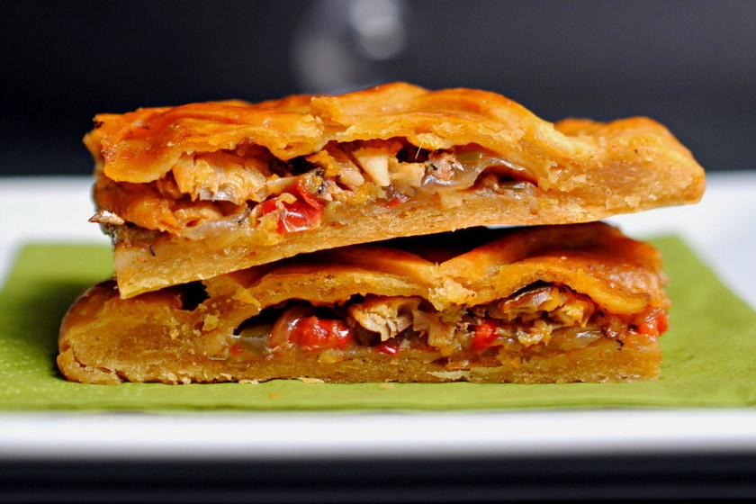

Empanada de atun
Ingredientes para la masa:
- -2 tazas de harina de trigo
- -1/2 taza de manteca (o mantequilla)
- -1/2 taza de agua (aproximadamente, ajusta según sea necesario)
- -1 cucharadita de sal
-Ingredientes para el relleno:
- -1 lata de atún en agua o aceite (escurrido)
- -1 cebolla, finamente picada
- -1 pimiento rojo, finamente picado
- -2 huevos duros, picados
- -Aceitunas verdes o negras, al gusto, picadas
- -2 cucharadas de tomate frito o salsa de tomate
- -Aceite de oliva para cocinar
- -Sal y pimienta al gusto
Instrucciones:
Preparación de la masa:
- -Mezcla la harina y la sal en un tazón. Agrega la manteca (o mantequilla)
y mezcla hasta obtener una textura arenosa. Añade gradualmente agua
mientras amasas hasta formar una masa suave y homogénea. Deja reposar la masa en la nevera durante al menos 30 minutos.
Preparación del relleno:
- -En una sartén, calienta un poco de aceite de oliva y saltea la cebolla y el pimiento hasta que estén tiernos. Agrega el atún escurrido, los huevos duros, las aceitunas y el tomate frito. Cocina a fuego medio durante unos minutos. sal y pimienta al gusto. Mezcla bien y deja enfriar.
Armar las empanadas:
- -Precalienta el horno a 180°C (350°F).
- -Estira la masa en una superficie enharinada y corta círculos del tamaño deseado.
- -Doble la masa sobre el relleno formando una media luna y presiona los bordes con un tenedor para sellar.
Cocción:
- -Coloca las empanadas en una bandeja para horno y hornéalas hasta que estén doradas, aproximadamente 20-25 minutos.